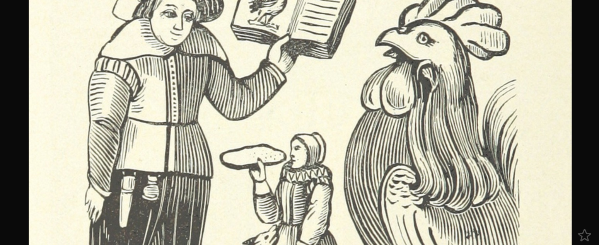

2015-12-23
為什麼要以創用CC授權書籍呢？本文將告訴你幾個創作人的故事，讓你知道他們是怎麼想的，而開放授權帶給他們什麼好處！

此圖無已知版權。
開放授權讓讀者更容易取用
世界銀行在2012年訂定開放取用(open access)政策，世界銀行自己做的研究會以創用CC 姓名標示授權，委託第三方的研究則以創用CC 姓名標示—非商業性—禁止改作授權，這個開放知識庫(Open Knowledge Repository)現在已經有超過13200份刊物可以下載。
開放取用計畫領導人及世界銀行出版人Carlos Rossel,表示，世界銀行的職員與作者反應良好，而且知識庫一上線就有超過200萬的下載量，可見大眾的需求量很高。他們最近做了一份有關開放取用政策的調查，結果顯示74%的使用者說他們會因為採用開放授權而更願意使用這些內容，而且學術界有71%的人會將知識庫的資源作為課堂讀物。Carlos猜測應該是因為學生可以免費取用這些刊物，老師才指定這些文章當成教材。
聯合國教育社會與文化組織UNESCO在2013年4月也決定採取開放取用政策，以創用CC姓名標示—相同方式分享的授權條款釋出刊物，並在同年年底發布開放取用資料庫，現在已經有超過450份開放授權的刊物。之前他們往往需要個別回應翻譯請求，現在則可以省下這個過程，而且相較以往只印製200份、分送到150個辦公室，刊物的流通範圍更為廣大。
不過，UNESCO的機構人員一開始並非完全接受開放授權，因為他們為了這些刊物投入許多，認為不應該讓他人輕易取用並翻譯。Abel Caine自從2009年起就擔任UNESCO開放教育資源的計劃專家，他希望藉由釋出刊物，可以帶來像是維基百科群眾協力的效益，像是可能會發現網路上非正式的翻譯比UNESCO之前專門請來的昂貴翻譯者更好。
開放授權減少出版成本、加快出版速度
拉丁美洲注重藝術、數位文化、數位管理的線上文化中心Ártica想要發行一本書卻苦無經費，於是使用創用CC 姓名標示—相同方式分享的授權條款。釋出後，不僅電子書有超過4000次下載次數，兩個月後也有出版社主動接洽他們要發行紙本書。
負責人Mariana Fossatti說：「創用CC授權條款相當大程度的助長了這個流程，因為出版者跟作者不再需要簽訂契約。出版者只要將這份素材重新編輯就能變成一本漂亮的書籍。」、「我們受益良多，因為我們有機會閱讀實體版本的書，這是我們缺乏知識、時間及製作技術與成本的書籍形式。」
開放授權彰顯社群精神並回應數位環境的改變
Anil Prasad是Innerviews的創辦人。這是第一本線上音樂雜誌，創辦於1994年，累積了大量珍貴的音樂人訪談。Anil在2013年10月將這些深度對談以創用CC姓名標示—禁止改作授權釋出。
Anil是因為看到許多音樂家都採用創用CC授權而做出此決定。他說：「我總是很好奇，是否你可以在沒有傳統著作權的情況下推出東西，而且仍然保留一些控制權。有了創用CC，就創造出一個很棒的組合概念。」在釋出這些訪談之後的幾個月，Anil就發現他的電子書成為iTunes上的冠軍，而且網站流量大增，採訪與合作機會也增加了，他變得前所未見的忙碌。
「我對於這個決定並不感到後悔。當我採用創用CC授權時很多人都很關注且感到不可置信，像是傳統雜誌的那些讀者。我收到很多充滿大寫字體及驚嘆號的電子信件，說我將會失去未來的營利機會，以及會使它們的影響力減弱。我想這反映出數位世界中的市代變遷。」Anil表示，他作為第一本線上音樂雜誌，現在再度擁抱變得的數位時代。
而且實際上並沒有人濫用這些作品，反而因為Premier Guitar、In Rock等雜誌轉印，讓音樂家的知名度也提升。現在讀者可以從許多媒體與管道獲得這些音樂家的資訊。
2014年，在20周年慶Innerviews網站改版時，網站上有個說明未來道路的宣告，指出這個網站屬於每個人。而創用CC展現了這樣的社群精神，人們可以自由分享、在他人的作品上創作、改善自己與他人。
開放授權是珍惜粉絲的授權選項
SL “Lisa” Huang在2014年3月以筆名為moniker SL Huang自助出版第一本小說零和遊戲，並採用創用CC姓名標示—非商業性—相同方式分享授權。他是MIT的數學碩士生，由MIT的Hal Abelson教授得知創用CC後便開始使用，他很高興今日的作者有這麼多授權方式可選。
Lisa說他當然支持對於創作者的保障，但是他也不希望粉絲因為分享或改編他的作品而被告，他甚至不想要有這個可以告粉絲的權利。Lisa很欣賞粉絲的熱情創作，並認為粉絲的活動對於創作者是有益的。因此，使用創用CC授權其實就是在表達「這些我認為應該合法但是卻是非法的東西，我就讓它們變成合法的！」
Lisa表示許多人會擔心採用開放授權的風險，但是與其擔心作品使用者不付錢，不如擔心沒有人使用。「要做這個決定仍然是很可怕的，但是就算不這麼做也很可怕。顯而易見的是，選擇最嚴格的權利控制無論如何都是最安全的，這就是帕斯卡的賭注(Pascal’s wager)。」因此，他鼓勵創作者不僅要權衡創用CC的利弊，也要權衡傳統著作權的利弊，而不要將傳統著作權當成預設值。
每個月，Lisa都因為他的電子書獲得一筆收入，而且他也正打算要出紙本書，第二本書將是第一本書的續集，將於2015年出版。他說：「我注意到當我談論我的書時，人們對於創用CC非常感興趣。許多人問我為什麼決定採用創用CC授權，身為一個作者，這是很棒的事。有幾個創用CC相關的銷售平台也已經聯絡我，希望主打我的書籍。」
參考資料